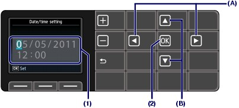

Contents > Preparing for Faxing > Specifying the Basic Settings for Faxing > Setting the Date and Time
 Setting the Date and Time
Setting the Date and Time
 Note Note
 When the machine is connected to a computer with the MP Drivers installed, the date and time setting will be copied from the computer to the machine. As long as the date and time are set accurately on your computer, you do not need to set them on the machine. When the machine is connected to a computer with the MP Drivers installed, the date and time setting will be copied from the computer to the machine. As long as the date and time are set accurately on your computer, you do not need to set them on the machine.
If you disconnect the power plug or when there is a power failure, the date and time setting on the machine will be reset. When you connect the machine to a computer with the MP Drivers installed, the setting may be copied to the machine once again.
|
Display the Date/time setting screen.
(1) Press the Setup button.
(2) Select Device settings  , and press the OK button.
, and press the OK button.
(3) Select Device user settings, and press the OK button.
(4) Select Date/time setting, and press the OK button.
Enter the date and time.
(1) Use the  or
or  button (A) to move the cursor under the desired position, then use the
button (A) to move the cursor under the desired position, then use the  or
or  button (B) to enter the date and time (in 24-hour format).
button (B) to enter the date and time (in 24-hour format).
Enter only the last two digits of the year.
Note
|
(2) Press the OK button.
Note
The date display format can be selected from three formats: YYYY/MM/DD, MM/DD/YYYY, or DD/MM/YYYY (Date display format).
|

Press the FAX button to return to the fax standby screen.